Least privilege for the twin: stop signing in to do everything
The live S3 browser needs a session. It does not need an administrator's. This page sets up IAM Identity Center so that the session you paste every day can do one narrow thing: list bucket names and nothing more, read one bucket, read one folder, or read and write one bucket. The administrator role stays available for administration, behind its own sign-in. Every command below was run through the AWS CLI's own parameter checks before it was published, and every policy is a file you can read and download.
1. The model, in one picture

AWSReservedSSO_<permission set>_<hash>; the portal turns that role into a one-hour session; the session is what you paste here.The diagram's source (Mermaid)
flowchart LR user["A user<br/>you sign in as this"] --> group["A group<br/>e.g. s3-readers"] group --> assign["An assignment<br/>group + account + permission set"] ps["A permission set<br/>a policy and a session length"] --> assign assign --> role["A role in the account<br/>AWSReservedSSO_name_hash"] role --> portal["The access portal<br/>pick account, then role"] portal --> session["A session<br/>key id, secret, token<br/>expires in 1 hour"] session --> twin["Paste into aws.twin<br/>sessions, then S3 browser"]
- Users and groups live in the identity store (the built-in directory, or an external IdP synced into it).
- A permission set is a template: one inline policy and/or AWS managed policies, plus a session length. Nothing exists in any account until it is assigned.
- An assignment is the triple principal + account + permission set. Assign to groups, not users: moving a person between groups is then the only thing you ever change.
- The role Identity Center creates in the account is named after the permission set. When you check a session on the sessions page, its ARN shows which one you picked:
arn:aws:sts::ACCOUNT:assumed-role/AWSReservedSSO_S3-Read-One-Bucket_…/you.
2. Four recipes for S3
Each is an inline policy for a permission set. Replace BUCKET_NAME (and FOLDER) with yours; the commands in section 3 do that with sed.
| Permission set | Policy | Can | Cannot |
|---|---|---|---|
| S3-List-Bucket-Names | s3-list-bucket-names.json | See every bucket's name and region | List any bucket's contents, read any object, change anything |
| S3-Read-One-Bucket | s3-read-one-bucket.json | See bucket names; list and read every object in BUCKET_NAME | Open any other bucket; write, delete, or change the bucket |
| S3-Read-One-Folder | s3-read-one-folder.json | See bucket names; list the bucket's top level and everything under FOLDER/; read objects under FOLDER/ | List or read any other folder; write anything |
| S3-Read-Write-One-Bucket | s3-read-write-one-bucket.json | Everything in the read recipe, plus upload, overwrite, tag and delete objects in BUCKET_NAME | Delete or reconfigure the bucket itself (versioning, policy, CORS, encryption), touch any other bucket |
The list-only recipe is the one you asked for, written out:
{
"Version": "2012-10-17",
"Statement": [
{ "Sid": "SeeTheBucketNamesAndNothingElse",
"Effect": "Allow",
"Action": ["s3:ListAllMyBuckets", "s3:GetBucketLocation", "cloudformation:ListResources"],
"Resource": "*" }
]
}
Notes that matter in practice:
- Why
cloudformation:ListResources. A browser cannot call S3's ListBuckets (it sends no CORS headers), so the console lists buckets through the Cloud Control API, which answers a page. Cloud Control checks both permissions: its own, and the S3 one (s3:ListAllMyBuckets) for what it lists. On its own it reveals nothing: listing any other resource type still needs that type's own permissions. - Bucket-level and object-level actions take different ARNs.
s3:ListBucketis granted onarn:aws:s3:::BUCKET_NAME;s3:GetObjectonarn:aws:s3:::BUCKET_NAME/*. Mixing them up is the most common reason a "read" policy reads nothing. - Hiding the other buckets' names: drop the
SeeTheBucketNamesstatement from the read recipes. The S3 browser then cannot list buckets, and you open yours by name instead (its Open a bucket by name form). - The folder recipe follows AWS's own home-folder pattern: listing is allowed for the prefixes
"",FOLDER/andFOLDER/*, so the bucket's top-level names are visible and nothing below another folder is. The S3 browser sendsprefix=at a bucket's root, as the S3 console does, so the condition matches. - KMS-encrypted buckets (SSE-KMS with your own key) also need
kms:Decrypton that key for reads, andkms:GenerateDataKeyfor writes. SSE-S3, the default, needs nothing more. - A bucket policy can still deny what the permission set allows, and an SCP above the account can too. The simulator in section 4 does not see either.
- The session check needs nothing. STS
GetCallerIdentityworks with every permission set, so the sessions page can always say who you are.
3. Set it up from the CLI
Run this once, with the administrator role, from AWS CloudShell (the terminal icon in the console's top bar: already signed in, the AWS CLI installed) or from a terminal holding an administrator session. It needs the management account, or a delegated administrator for Identity Center, in the region Identity Center is enabled in.
# 0. where Identity Center lives, and what to work on export AWS_REGION=eu-west-2 # where Identity Center is enabled (its Settings page) INSTANCE_ARN=$(aws sso-admin list-instances --query 'Instances[0].InstanceArn' --output text) IDENTITY_STORE_ID=$(aws sso-admin list-instances --query 'Instances[0].IdentityStoreId' --output text) ACCOUNT_ID=$(aws sts get-caller-identity --query Account --output text) BUCKET=your-bucket-name echo $INSTANCE_ARN $IDENTITY_STORE_ID $ACCOUNT_ID # 1. the policies, from this site, with your bucket's name in them curl -sO https://aws.twin.sgit.ai/iam/policies/s3-list-bucket-names.json curl -s https://aws.twin.sgit.ai/iam/policies/s3-read-one-bucket.json | sed "s/BUCKET_NAME/$BUCKET/g" > s3-read-one-bucket.json cat s3-read-one-bucket.json # read what you are about to grant # 2. two permission sets, one-hour sessions PS_LIST=$(aws sso-admin create-permission-set --instance-arn $INSTANCE_ARN --name S3-List-Bucket-Names \ --description "See bucket names, not contents" --session-duration PT1H \ --query 'PermissionSet.PermissionSetArn' --output text) aws sso-admin put-inline-policy-to-permission-set --instance-arn $INSTANCE_ARN \ --permission-set-arn $PS_LIST --inline-policy file://s3-list-bucket-names.json PS_READ=$(aws sso-admin create-permission-set --instance-arn $INSTANCE_ARN --name S3-Read-One-Bucket \ --description "Read one bucket" --session-duration PT1H \ --query 'PermissionSet.PermissionSetArn' --output text) aws sso-admin put-inline-policy-to-permission-set --instance-arn $INSTANCE_ARN \ --permission-set-arn $PS_READ --inline-policy file://s3-read-one-bucket.json # 3. a group per permission set; you (or a new daily user) in them G_LIST=$(aws identitystore create-group --identity-store-id $IDENTITY_STORE_ID \ --display-name s3-list-only --description "Can list bucket names" --query GroupId --output text) G_READ=$(aws identitystore create-group --identity-store-id $IDENTITY_STORE_ID \ --display-name s3-read-one-bucket --description "Can read one bucket" --query GroupId --output text) # an existing user, by user name ... USER_ID=$(aws identitystore get-user-id --identity-store-id $IDENTITY_STORE_ID --query UserId --output text \ --alternate-identifier '{"UniqueAttribute":{"AttributePath":"userName","AttributeValue":"YOUR_USER_NAME"}}') # ... or a new daily user (see section 5 for their first sign-in) USER_ID=$(aws identitystore create-user --identity-store-id $IDENTITY_STORE_ID --user-name daily-user \ --display-name "Daily User" --name GivenName=Daily,FamilyName=User \ --emails Value=daily.user@example.com,Type=work,Primary=true --query UserId --output text) aws identitystore create-group-membership --identity-store-id $IDENTITY_STORE_ID --group-id $G_LIST --member-id UserId=$USER_ID aws identitystore create-group-membership --identity-store-id $IDENTITY_STORE_ID --group-id $G_READ --member-id UserId=$USER_ID # 4. assign: group + account + permission set (this also creates the role in the account) aws sso-admin create-account-assignment --instance-arn $INSTANCE_ARN --target-id $ACCOUNT_ID --target-type AWS_ACCOUNT \ --permission-set-arn $PS_LIST --principal-type GROUP --principal-id $G_LIST aws sso-admin create-account-assignment --instance-arn $INSTANCE_ARN --target-id $ACCOUNT_ID --target-type AWS_ACCOUNT \ --permission-set-arn $PS_READ --principal-type GROUP --principal-id $G_READ aws sso-admin list-account-assignment-creation-status --instance-arn $INSTANCE_ARN # SUCCEEDED within seconds # 5. later, after editing a permission set's policy: push the change to the accounts that have it aws sso-admin put-inline-policy-to-permission-set --instance-arn $INSTANCE_ARN \ --permission-set-arn $PS_READ --inline-policy file://s3-read-one-bucket.json aws sso-admin provision-permission-set --instance-arn $INSTANCE_ARN \ --permission-set-arn $PS_READ --target-type ALL_PROVISIONED_ACCOUNTS
The other two recipes are the same three steps with their files: s3-read-one-folder.json (also sed "s/FOLDER/reports/g") and s3-read-write-one-bucket.json. To give a permission set an AWS managed policy instead, for example S3 read-only on every bucket:
PS_READ_ALL=$(aws sso-admin create-permission-set --instance-arn $INSTANCE_ARN --name S3-Read-All \
--session-duration PT1H --query 'PermissionSet.PermissionSetArn' --output text)
aws sso-admin attach-managed-policy-to-permission-set --instance-arn $INSTANCE_ARN \
--permission-set-arn $PS_READ_ALL --managed-policy-arn arn:aws:iam::aws:policy/AmazonS3ReadOnlyAccess
Seeing what exists:
aws sso-admin list-permission-sets --instance-arn $INSTANCE_ARN aws sso-admin describe-permission-set --instance-arn $INSTANCE_ARN --permission-set-arn $PS_READ aws sso-admin get-inline-policy-for-permission-set --instance-arn $INSTANCE_ARN --permission-set-arn $PS_READ aws sso-admin list-account-assignments --instance-arn $INSTANCE_ARN --account-id $ACCOUNT_ID --permission-set-arn $PS_READ aws identitystore list-users --identity-store-id $IDENTITY_STORE_ID aws identitystore list-group-memberships --identity-store-id $IDENTITY_STORE_ID --group-id $G_READ
The console does the same under IAM Identity Center: Permission sets (Create permission set, Custom permission set, paste the JSON into the inline policy), Groups, and AWS accounts (select the account, Assign users or groups).
4. Test a policy before anyone has it
iam simulate-custom-policy evaluates a policy document against actions and resources without assigning it to anyone. It does not see bucket policies or SCPs, so it answers "does this policy allow it", which is the question while writing one.
aws iam simulate-custom-policy --policy-input-list file://s3-read-one-bucket.json \
--action-names s3:ListAllMyBuckets s3:ListBucket s3:GetObject s3:PutObject \
--resource-arns "arn:aws:s3:::$BUCKET" "arn:aws:s3:::$BUCKET/notes.txt" \
--query "EvaluationResults[].[EvalActionName,EvalResourceName,EvalDecision]" --output table
# the folder recipe: the decision depends on the prefix asked for
aws iam simulate-custom-policy --policy-input-list file://s3-read-one-folder.json \
--action-names s3:ListBucket --resource-arns "arn:aws:s3:::$BUCKET" \
--context-entries ContextKeyName=s3:prefix,ContextKeyValues=other/,ContextKeyType=string \
--query "EvaluationResults[].EvalDecision" --output text # implicitDeny
The simulator pairs every action with every resource. For the read-one-bucket recipe expect allowed for ListAllMyBuckets (its resource is *), for ListBucket on the bucket and for GetObject on the object; implicitDeny for ListBucket on the object and GetObject on the bucket (the wrong ARN for each, which is the point of the check), and for PutObject everywhere.
5. A new user's first sign-in, and MFA
- Users created from the CLI get no invitation. In the IAM Identity Center console, open Users, the user, Reset password, and choose to send them an email with instructions (or generate a one-time password and hand it over yourself). Some consoles also offer, under Settings, Authentication, a setting to send an email one-time password for users created from the API; with it on, the first sign-in works without the reset.
- Require MFA: Settings, Authentication, Multi-factor authentication, Configure: prompt every time they sign in, allow authenticator apps and security keys or passkeys, and require users without a device to register one at sign-in.
- Session length is the permission set's:
PT1Habove. The access portal's own sign-in lasts longer (Settings, Authentication, Session duration); shorter is better there too.
6. Try it in the S3 browser
- Sign in to the access portal as the narrow user (or as yourself), pick the account, and pick S3-List-Bucket-Names, not AdministratorAccess. Choose Access keys and copy any block.
- Paste it on the sessions page and press Check it against AWS. The ARN should name
AWSReservedSSO_S3-List-Bucket-Names_…. - In the same tab, open the console's S3 page and press Live, top left, then Go live. Buckets are listed through Cloud Control, from the browser; opening one needs its CORS rule (section 7), or the local relay (what it is).
- What each recipe should show:
| Permission set | Bucket list | Open a bucket | Open a file | Upload (writes ticked) |
|---|---|---|---|---|
| S3-List-Bucket-Names | every name | AccessDenied | n/a | AccessDenied |
| S3-Read-One-Bucket | every name | yours lists; the others AccessDenied | yes, in yours | AccessDenied |
| S3-Read-One-Folder | every name | top level, and inside FOLDER/ | under FOLDER/ only | AccessDenied |
| S3-Read-Write-One-Bucket | every name | yours | yes, in yours | yes, in yours |
Writes are refused by the S3 browser itself in live mode unless Allow writes is ticked, before any request is made, whatever the permission set says. A refusal from AWS shows as its own code, AccessDenied, which is the least-privilege setup working.
7. Without the relay: a CORS rule on the bucket
A browser can read an answer from a bucket only if the bucket has a CORS rule naming this site's origin. With one, the S3 browser reaches that bucket straight from the page, no relay. Listing all buckets still needs the relay: S3's ListBuckets endpoint has no CORS at all.
A CORS rule grants nothing. It only lets a page read the answers to requests the session's own policy already allows; an unsigned request, or a session without permission, still gets AccessDenied. Add it with the administrator role (it needs s3:PutBucketCORS, which no recipe above grants):
curl -sO https://aws.twin.sgit.ai/iam/policies/bucket-cors-for-aws-twin.json
aws s3api get-bucket-cors --bucket $BUCKET # an existing rule? merge into it rather than replace it
aws s3api put-bucket-cors --bucket $BUCKET --cors-configuration file://bucket-cors-for-aws-twin.json
aws s3api get-bucket-cors --bucket $BUCKET
The rule: bucket-cors-for-aws-twin.json, origin https://aws.twin.sgit.ai only, the methods the browser uses, and the response headers it needs to see (ETag, version id, region). Remove it with aws s3api delete-bucket-cors --bucket $BUCKET.
8. Move the administrator out of daily reach
The order matters; do not remove your own administrator access before the replacement is proven.
- Create a separate administrator user (its own user name, and its own email address, for example a plus-address), with MFA, and a group
break-glass-adminsassigned AdministratorAccess on the account. Give that permission set a one-hour session too. - Sign in as it once in a private window and check that AdministratorAccess works.
- Remove AdministratorAccess from your daily user, then sign out and back in to see only the narrow roles:
PS_ADMIN=arn:aws:sso:::permissionSet/… # from: aws sso-admin list-permission-sets, then describe-permission-set
aws sso-admin list-account-assignments --instance-arn $INSTANCE_ARN --account-id $ACCOUNT_ID --permission-set-arn $PS_ADMIN
aws sso-admin delete-account-assignment --instance-arn $INSTANCE_ARN --target-id $ACCOUNT_ID --target-type AWS_ACCOUNT \
--permission-set-arn $PS_ADMIN --principal-type USER --principal-id $USER_ID
- If the administrator access came through a group, remove the daily user from that group instead (
aws identitystore delete-group-membership). - The account's root user stays the last resort: MFA on, no access keys, password in a safe place. It can repair Identity Center if every administrator is locked out.
- Service users (for example ones used by Grafana) want their own narrow permission sets as well, scoped to what they read.
How these commands were checked
Every command on this page was run through the AWS CLI (version 1.46) against the AWS twin's local endpoint (python -m aws_twin) with placeholder values. The CLI validates parameter names, shapes and required values before it sends anything, so a command with a wrong flag fails there; each of these reached the twin, which answered the S3 calls and returned NotImplemented, by name, for the Identity Center and IAM ones. The policy files are checked by the site's tests: valid JSON, version 2012-10-17, placeholders present, and the CORS rule accepted by S3's PutBucketCors shape. What was not done is running them against a real organisation: AWS's own validation of the policy grammar happens in put-inline-policy-to-permission-set, and section 4 is how to catch a mistake before that.